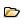
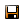

Complex SOR
On Complex Schedule of Rates (SOR) invoiced , SOR items are added to the ; when they are marked as "complete" or "ready for invoicing", they appear on the invoice. You can produce several invoices for the over time.
To process a complex SOR invoice:
- Add the schedule of rates items to the :
- Click .
- Select the SOR Type to add.
- Add SOR items using the standard line maintenance features. To add non-standard items, select the Custom SOR items type and enter your own code.
- Mark the SOR items as ready for invoicing:
- Click .
- Either:
- To mark the whole as ready for invoicing, on the Ready for Invoicing tab, click , the Ready for Invoicing box, then click .
- To mark individual items as ready for invoicing, on the Items tab, click next to the item you want to mark, the RFIbox, then click .
- Use Invoice Generation to generate the invoice.
- Use Print Invoice to print the invoice.